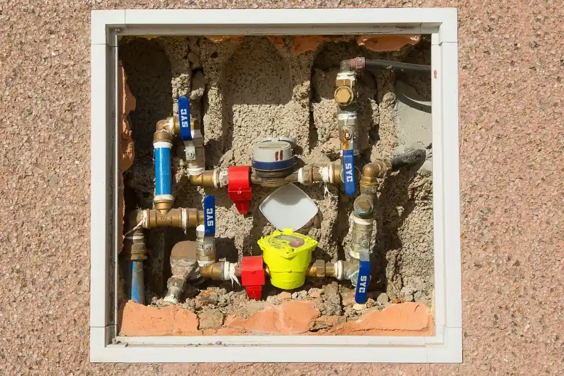

Your local North Boulder leak detection team
Leak Detection in North Boulder
Leak detection in North Boulder is crucial for preventing water damage in homes and businesses. Our experts provide comprehensive water leak detection in North Boulder, ensuring your property remains safe and dry.
24/7 dispatchNorth Boulder ZIP codesResidential & commercial
Local system knowledge
Expert Leak Detection in North Boulder
Leak detection in North Boulder is a vital service that helps residents identify and resolve plumbing issues before they escalate. With our team serving neighborhoods like Newlands, Northfield, and Foothills, we understand the unique challenges posed by the area's varied housing styles and frequent irrigation system concerns. Our expertise ensures that your property remains protected from water damage and mold growth, making us the preferred choice for leak detection services.
Explore North Boulder services
Leak Detection ProsNorth Boulder has a unique blend of older homes and newer constructions, which can lead to distinct plumbing challenges. Our local presence allows us to respond quickly to the community's needs, ensuring timely and effective leak detection.
Services available in North Boulder
Leak Detection Services Available in North Boulder
Leak detection demand in North Boulder is on the rise as homeowners seek to prevent costly water damage. We offer a range of services tailored to meet the needs of this community, including emergency leak detection in North Boulder.
01
Residential Leak Detection
Our residential leak detection services in North Boulder focus on identifying plumbing issues in homes, from slab leaks to pipe bursts, ensuring your family stays safe and dry.
02Commercial Leak Detection
For businesses in North Boulder, our commercial leak detection services address potential leaks that can disrupt operations, protecting your investment and ensuring a safe environment for employees and customers.
03Water Pipe Inspection
We provide thorough water pipe inspections in North Boulder to identify potential weaknesses in your plumbing system, using advanced tools like infrared cameras and moisture meters.
04Slab Leak Detection
Our slab leak detection services in North Boulder focus on identifying leaks beneath concrete foundations, preventing major structural damage and costly repairs.
More than a service list
How We Execute Leak Detection in North Boulder
Leak detection in North Boulder requires specialized knowledge of local building codes and plumbing materials. Our technicians are equipped with the latest tools, including acoustic listening devices and thermal imaging,
Aging Infrastructure
Many homes in North Boulder have older plumbing systems, making them more susceptible to leaks and requiring careful inspection. How we help: Our team is trained to handle the unique challenges posed by older infrastructure, using advanced techniques to detect hidden leaks.
Soil Movement
The soil composition in North Boulder can shift, leading to pipe misalignments and leaks. How we help: We utilize specialized equipment to assess soil conditions and adjust our detection methods accordingly.
High Water Table
A high water table can lead to increased pressure on pipes, causing leaks. How we help: Our experts are familiar with local geology and can provide tailored solutions to mitigate these risks.
Early warning signs
Signs You Need Leak Detection Services
A small visible symptom can point to a bigger pattern.
Unexplained water bills
Unexplained water bills
Damp spots on walls
Damp spots on walls
Water pooling in yard
Water pooling in yard
Low water pressure
Low water pressure
Clear starting points
Pricing for Leak Detection in North Boulder
In 2026, leak detection in North Boulder typically ranges from $180 to $450, depending on the complexity of the job. Factors such as the type of leak, accessibility, and the need for advanced technology can influence pricing. We strive to provide affordable leak detection services in North Boulder, ensuring you receive the best value.
Type of Leak
Different types of leaks, such as slab leaks or irrigation leaks, require varying levels of expertise and equipment, impacting overall costs.
Accessibility
If a leak is located in hard-to-reach areas, additional labor and time may be required, increasing the overall service cost.
Technology Used
Utilizing advanced tools like infrared cameras can enhance detection accuracy but may also increase service costs.
We know the route
Landmarks and Points of Interest in North Boulder
Navigating North Boulder is easy for our team, as we are familiar with key landmarks and common routes. This knowledge allows us to provide efficient leak detection services while minimizing delays.
Wonderland Lake
Located near many residential areas, we often serve customers in this vicinity who require prompt leak detection services.
Boulder Reservoir
The proximity to water bodies makes leak detection essential for preventing water-related issues in surrounding homes.
North Boulder Park
Being close to this park means we can quickly reach customers needing urgent leak detection services.
Foothills Community Park
This area is a hub for families, and we often assist homeowners with irrigation system leaks.
North Boulder service coverage
Is your ZIP on the route?
These are our most frequently served ZIP codes. Nearby areas may also qualify — call if you do not see yours.
Popular neighborhoods: Newlands · Northfield · Foothills · North Boulder Park
Check my address →
1234
Primary North Boulder response zoneSame-day response depends on current call volume, technician availability, and required equipment.

North Boulder leak detection FAQ
FAQs About Leak Detection in North Boulder
A real dispatcher is available if your question is not answered here.
Call (303) 749-5236What is the cost of leak detection in North Boulder?
The typical cost for leak detection in North Boulder ranges from $180 to $450, depending on the complexity and type of leak.
How to choose a leak detection service in North Boulder?
Look for companies with local experience, advanced technology, and verified qualifications to ensure quality leak detection services.
Where to find emergency leak detection in North Boulder?
Many local companies offer 24/7 emergency leak detection services in North Boulder. Look for those with a strong reputation.
How long does leak detection take in North Boulder?
Most leak detection services in North Boulder take between 1 to 3 hours, depending on the complexity of the issue.
What are the signs of a leak in my North Boulder home?
Common signs include unexplained water bills, damp spots, and low water pressure. If you notice these, call for leak detection immediately.
North Boulder dispatch is ready
Need Leak Detection Boulder CO Services?
Don't let leaks go undetected. Contact us today for professional leak detection Boulder CO services and protect your property.
Talk with the local team
Request North Boulder service
We're here to help with all your leak detection needs in Boulder. Reach out to us during business hours for a prompt response.